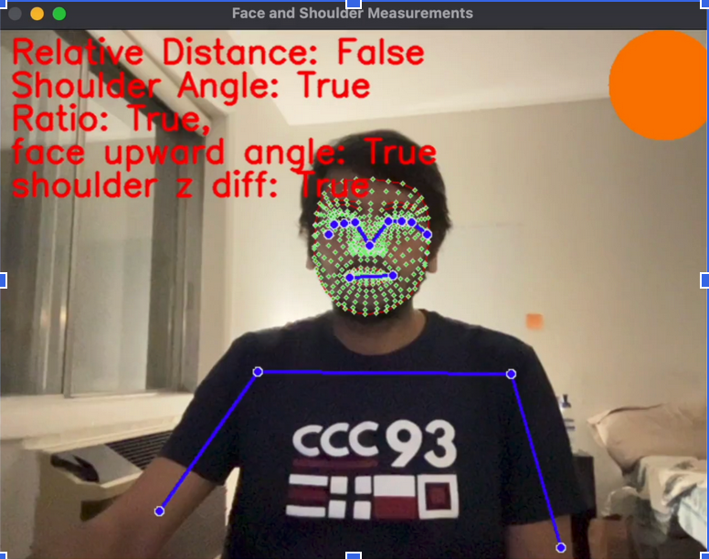

Posture Monitoring System
This project is a real-time posture monitoring system using computer vision techniques. It uses the webcam of a computer to analyze the user's posture and provide feedback on their sitting position. The system detects and tracks the user's face and shoulders, calculates the relative distance between them, and analyzes various angles and ratios to determine the posture quality.
GitHub Repository: https://github.com/venky180/slouch_detector
Table of Contents
Installation
- Clone the repository:
git clone https://github.com/your-username/posture-monitoring-system.git - Install the required dependencies:
pip install -r requirements.txt
Usage
- Run the
slouch.pyscript:python slouch.py - The system will access the webcam and start capturing the video feed.
- The detected face and shoulder landmarks will be highlighted on the video stream.
- The system will analyze the posture based on various criteria, such as relative distance, shoulder angle, face angle, and more.
- If the system detects poor posture, it will provide real-time notifications to the user.
Features
- Real-time posture monitoring using computer vision techniques
- Detection and tracking of facial landmarks
- Calculation of relative distance between face and shoulders
- Analysis of shoulder angles and face angles
- Real-time notifications for poor posture
Roadmap
This project has the following planned enhancements:
- Calibrating the system for each user to improve accuracy and personalization
- Environmental calibration to handle variations in lighting, background, and other factors
- Progress tracking over time to provide insights and improvements for the user
- Tracking and analysis of common mistakes made by the user to target specific areas of improvement
- Integration with smartwatches for convenient posture notifications
- Collecting data to establish average sitting postures for different individuals and settings
Contributing
Contributions are welcome! If you have any ideas, suggestions, or bug fixes, please submit a pull request. For major changes, please open an issue first to discuss the proposed changes.
Introduction
Posture-related problems are widespread, with 80% of Americans experiencing issues. Poor sitting posture can lead to discomfort and health complications. The Slouch Detector project aims to provide real-time feedback on sitting posture using computer vision technologies, promoting better spinal alignment and reducing health risks.
Motivation
Due to the prevalence of posture-related problems, there's a need for proactive measures. The Slouch Detector project, leveraging MediaPipe and OpenCV, offers real-time feedback to users, helping them monitor and correct their sitting posture. The goal is to empower individuals to adopt healthier habits and prevent future health complications.
Goals
The primary goals of the Slouch Detector project include continuous real-time monitoring of sitting posture, providing immediate feedback to users, offering guidelines for posture maintenance, and ensuring minimal setup and device requirements. The project aims to make posture monitoring accessible and user-friendly for widespread adoption.
Approach
The Slouch Detector project utilizes OpenCV for computer vision tasks, including video capture for real-time monitoring. MediaPipe Pose is employed for accurate body pose estimation, enabling the detection of slouching or poor posture. The project also leverages Plyer for cross-platform notifications. The approach involves a combination of technologies to achieve real-time monitoring, immediate feedback, and posture-related features.